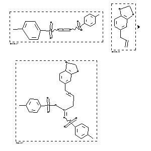

|  |
| FA | RX(1); FLST(1); RX(1) |
Reaction (1 of 1)
| Reaction ID | 1767857 |
| Reactant BRN | 701872; 136380 |
| Reactant | N,N'-bis-(toluene-4-sulfonyl)-sulfur diimide; 5-allyl-benzo[1,3]dioxole |
| Product BRN | 4613903 |
| Product | N1,N2-Ditosyl-3-(1,3-benzodioxol-5-yl)-2-propen-sulfinamidin |
| No. of Reaction Details | 1 |
Reaction Details (1 of 1)
| Reaction Classification | Preparation |
| Yield | 69 percent (BRN=4613903) |
| Solvent | toluene |
| Time | 30 hour(s) |
| Temperature | -20 |
| Citation Pointer | 5556801; Journal; Bussas, Reinhard; Kresze, Guenter; LACHDL; Liebigs Ann.Chem.; GE; 4; 1980; 629-649; |
Reference (1 of 1)
| Citation Number | 5556801 |
| Document Type | Journal |
| Authors | Bussas, Reinhard; Kresze, Guenter |
| CODEN | LACHDL |
| Journal Title | Liebigs Ann.Chem. |
| Language Code | GE |
| Number | 4 |
| Publication Year | 1980 |
| Page | 629-649 |